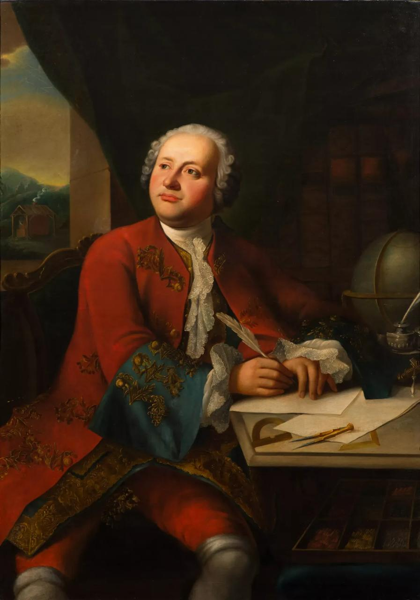

Химия и физика
Первая химическая лаборатория, закон сохранения массы, открытие атмосферы у Венеры.
1711–1765
Первый русский учёный-энциклопедист, реформатор науки и словесности
Родился в 1711 году в Архангельской губернии. Благодаря невероятной тяге к знаниям прошёл путь от рыбацкой деревни до профессора Петербургской академии наук. Современники называли его «человеком эпохи Возрождения» за вклад в химию, физику, астрономию, географию, поэзию и историю.

Ломоносов соединял опыт северного помора, европейскую школу естественных наук и литературное чувство русского классицизма. Его биография стала образом стремительного подъёма человека знания в XVIII веке.
Шесть сфер, в которых Ломоносов оставил след как исследователь, изобретатель и просветитель.
«Здесь, в здании Кунсткамеры, в XVIII–XIX веках располагалась Санкт-Петербургская академия наук, основанная Петром I в 1724 году. Именно здесь работал Михаил Васильевич Ломоносов — первый российский член Академии. Экспозиция зала воссоздаёт атмосферу научного учреждения XVIII века: здесь можно увидеть редкие книги, старинные приборы, личные вещи Ломоносова и мозаики его мастерской. Всё это помогает лучше понять эпоху, в которой зарождалась русская наука. Так давайте узнаем о его жизни подробнее».
«Михаил Ломоносов родился 19 ноября 1711 года. В поморском крае, деревне Мишанинской, недалеко от Холмогор, прошло его детство. Это был суровый северный мир — мир моря, промыслов, холода и тяжёлого труда. Его отец, Василий Дорофеевич, был зажиточным по местным меркам помором-промышленником, владел собственным судном и ходил на дальние рыбные промыслы. С десяти лет Михаил уже выходил с ним в море, учился выносливости, наблюдательности и дисциплине. Но среди этого сурового быта у мальчика рано проявилась необыкновенная тяга к знаниям. Он научился читать, а особенно сильное впечатление на него произвели книги, которые он позже называл “вратами своей учёности”, — грамматика Смотрицкого и арифметика Магницкого.
Отец видел в нём будущего наследника промысла, а семья ожидала, что Михаил останется дома и будет жить так же, как жили поколения до него. Но сам Ломоносов мечтал о другом. Обстановка в доме становилась всё тяжелее, особенно после появления мачехи, которая считала его занятия книгами пустой тратой времени. Когда отец задумал женить сына, Михаил понял: если он останется, путь к науке для него будет закрыт навсегда. И тогда в декабре 1730 года девятнадцатилетний юноша решается на отчаянный шаг — тайно уходит из дома и отправляется в Москву вместе с рыбным обозом. Это было почти бегство: без прочного положения, почти без денег, но с огромной верой в собственные силы. Уже в январе 1731 года он прибыл в Москву и поступил в Славяно-греко-латинскую академию, выдав себя за сына холмогорского дворянина, потому что крестьян туда не принимали.
Учёба давалась ему тяжело не по способностям, а по условиям жизни. Девятнадцатилетнего юношу посадили за парту с маленькими детьми, потому что начинать пришлось с самых основ. Он жил на мизерное жалованье — всего несколько копеек в день, терпел голод, холод и постоянную нужду. Но именно здесь проявилась его невероятная работоспособность. За один год он прошёл сразу несколько классов, а весь курс, на который обычно уходили долгие годы, освоил в кратчайший срок. Его успехи были столь очевидны, что в 1735 году Ломоносова направили в Петербург, в гимназию при Академии наук, а вскоре включили в число лучших учеников, которых решили отправить за границу учиться горному делу, металлургии и естественным наукам.
Так в 1736 году Михаил Ломоносов оказался в Германии. Сначала он учился в Марбурге у знаменитого философа и учёного Христиана Вольфа. Там он изучал самые разные дисциплины — от физики и химии до философии, логики и иностранных языков. Вольф высоко оценивал способности русского студента, отмечал его сильный ум и исключительную память. Но германская жизнь стала для Ломоносова не только школой науки, но и школой характера. Он оказался в новой среде, где было много соблазнов, шумной студенческой жизни, трат и долгов. При этом даже в это время он продолжал много читать, писать и работать. В Марбурге же началась и его семейная история: он познакомился с Елизаветой Христиной Цильх, дочерью хозяйки дома, где снимал жильё. В 1739 году у них родилась дочь, а затем состоялось и венчание.
Позже Ломоносова перевели во Фрайберг, где он должен был глубже изучать горное дело и металлургию. Но именно там особенно ярко проявился его буйный, независимый характер. Он тяжело сходился с людьми, не терпел высокомерия, резко спорил с наставниками и не умел молчать, если считал себя правым. Отношения с преподавателем Генкелем быстро испортились: Ломоносова раздражали формализм, мелочность и постоянные придирки. Конфликт дошёл до такого накала, что его европейская командировка превратилась в череду ссор, долгов, скитаний и почти авантюрных приключений. В какой-то момент он даже оказался насильно завербован в прусскую армию, но сумел бежать. Лишь в июне 1741 года Ломоносов вернулся в Петербург — уже не просто талантливым студентом, а человеком с огромным европейским опытом, широчайшими знаниями и очень непростым характером.
Однако на родине его ждал не триумф, а новая борьба. Петербургская Академия наук в те годы находилась под сильным влиянием иностранцев, а важнейшей фигурой в её управлении был Иоганн Даниэль Шумахер — человек властный, жёсткий и крайне неудобный для русских учёных. Именно Шумахер контролировал канцелярию, деньги, библиотеку и типографию, фактически распоряжаясь всей академической жизнью. Для Ломоносова, вернувшегося с чувством собственного достоинства и пониманием своей силы, такое положение было унизительным. Он не терпел несправедливости, вступал в резкие споры, конфликтовал с коллегами и начальством, и вскоре его стычки стали известны всей Академии. Его даже арестовывали и держали под стражей, а затем под домашним надзором. Но сломить Ломоносова было невозможно. Даже в самые трудные месяцы он продолжал писать и работать.
В это же время судьба России резко менялась. В 1741 году на престол взошла Елизавета Петровна, дочь Петра Великого. С её восшествием началась новая эпоха, и для Ломоносова это было особенно важно. Елизавета стремилась опираться на русские силы и была гораздо благосклоннее к отечественным талантам, чем прежняя власть. Ломоносов очень точно почувствовал этот исторический момент. Он проявил себя не только как учёный, но и как поэт: его торжественные оды, посвящённые Елизавете Петровне, звучали ярко, сильно и по-настоящему по-русски. Именно они помогли ему обратить на себя внимание двора. Его поэзия стала не просто литературой, а способом заявить о себе, о русском языке, о русском уме и о праве русских людей создавать собственную науку.
С восшествием Елизаветы Петровны начинается и настоящий расцвет Ломоносова. Если раньше он только пробивал себе дорогу, то теперь получил возможность творить в полную силу. Уже в 1745 году он стал профессором химии — первым русским профессором Академии наук. За этим последовали его важнейшие труды, научные опыты, литературные реформы, борьба за развитие русского языка и русской науки. Так из поморского мальчика, который когда-то ушёл из деревни с двумя книгами, вырос человек, сумевший изменить не только собственную судьбу, но и судьбу всей российской культуры и науки».
«Теперь переходим к теме света и оптики — одной из самых интересных страниц в научной биографии Ломоносова. Он стремился не только понять природу света, но и объяснить её с точки зрения физики: считал, что свет передаётся колебательным движением частиц эфира, а цвета связаны с тремя основными началами — красным, жёлтым и голубым. Ещё в 1741 году Ломоносов предложил проект особого оптического зажигательного инструмента, а позже создал целый ряд приборов: ночезрительную трубу, горизонтоскоп и собственную конструкцию телескопа. Его оптико-технические работы заметно опередили своё время. Особенно важным стал 1761 год: наблюдая прохождение Венеры по диску Солнца, Ломоносов первым в мире установил, что эта планета имеет атмосферу. После этого он продолжил совершенствовать телескопы систем Ньютона и Грегори, занимался фотометрией звёзд и развивал практическую астрономию. Так Ломоносов проявил себя и как глубокий теоретик света, и как талантливый изобретатель оптических приборов».
«Поэзия и литературное творчество. Ломоносов стал одним из главных реформаторов русской литературы. В 1739 году он создал первую оду нового типа — “Оду на взятие Хотина”, а вместе с ней изложил и правила российского стихотворства. Он разработал первую научную русскую грамматику и теорию трёх штилей, заложив основы нового литературного языка. Его торжественные оды разрушили устаревшие каноны, а новаторские стихи оказали огромное влияние на всю русскую словесность».
«Исследование смальты и мозаичное дело. В химической лаборатории, построенной в 1748 году, Ломоносов начал опыты по созданию цветных стёкол и вскоре разработал технологию прозрачных и непрозрачных стекол — смальт. Именно из этой смальты он стал создавать мозаичные картины. В 1752 году Ломоносов добился разрешения на строительство собственной фабрики, а уже в 1753 году близ Ораниенбаума появилась Усть-Рудицкая фабрика цветного стекла. Это было передовое для своего времени предприятие: здесь работали станки, созданные по проекту Ломоносова и приводимые в действие водой реки Рудицы. На фабрике изготавливали смальту для мозаик, бисер, стеклярус, посуду и другие изделия из стекла. Уже в 1754 году фабрика начала поставлять цветное стекло для украшения дворцовых помещений в Ораниенбауме. Благодаря этим опытам Ломоносов фактически возродил в России искусство смальтовой мозаики: в его мастерской было создано сорок мозаик, из которых до наших дней сохранилось двадцать три. Самой знаменитой из них стала “Полтавская баталия”, соединившая в себе и научный труд, и художественный талант учёного».
«Основание Московского университета. В начале 1750-х годов Ломоносов предложил создать в Москве университет, открытый для людей разных сословий. Он разработал его устав и проект внутреннего устройства, продумав, каким должно быть новое учебное заведение. В 1755 году Московский университет был открыт и стал одним из главных воплощений его просветительских идей. Для Ломоносова это было не просто создание школы, а важный шаг к развитию отечественной науки, образования и подготовке собственных русских учёных».
«Химия. В 1745 году Ломоносов стал первым русским профессором химии при Академии наук. А в 1748 году по его настоянию в Петербурге была создана первая в России химическая лаборатория, где он проводил многочисленные опыты и исследования. Ломоносов считал, что все тела состоят из мельчайших частиц — элементов и корпускул, то есть фактически подошёл к идее атомов и молекул. Он также сформулировал закон сохранения вещества и движения, утверждая, что если где-то что-то прибавляется, то в другом месте столько же убывает. Кроме того, учёный объяснял тепло как движение частиц, а холод — как замедление этого движения. Именно поэтому Ломоносова считают одним из основоположников русской физической химии».
«Химия, география и атмосферное электричество. В 1745 году Ломоносов стал первым русским профессором химии, а в 1748 году добился открытия первой в России химической лаборатории. Здесь он проводил опыты, пришёл к выводу, что все тела состоят из мельчайших частиц — элементов и корпускул, и сформулировал закон сохранения вещества и движения».
«В географии Ломоносов объяснял изменение земной поверхности действием геологических процессов, изучал северные моря и в 1763 году завершил труд об их исследовании. Он предложил маршруты через Северный Ледовитый океан, считал, что у Северного полюса нет суши, и высказывал мысль о существовании земли у Южного полюса».
«Кроме того, Ломоносов вместе с профессором Рихманом проводил в Петербурге опыты с атмосферным электричеством, а для метеорологических наблюдений создал “аэродинамическую машину” — прообраз летательного аппарата для подъёма приборов в воздух. Так Ломоносов проявил себя как учёный, который одинаково смело работал и в лаборатории, и в изучении Земли, и в исследовании природных явлений».
«Таков был путь Ломоносова — учёного, поэта и просветителя, чьи открытия, труды и идеи навсегда изменили историю России. Спасибо за внимание!»